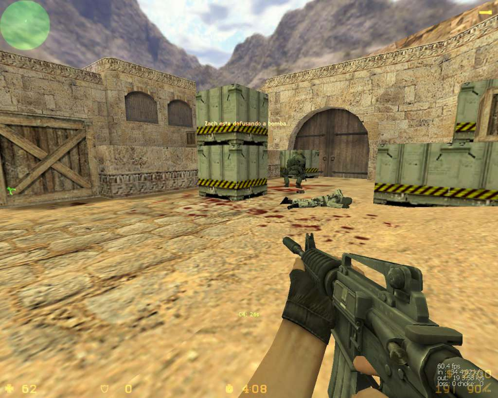
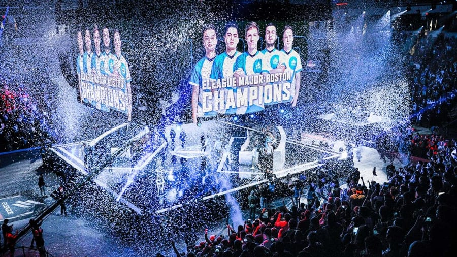

This is a blue gem karambit knife skin in CSGO that you can both use
and trade. It is estimated to be worth about $1.4 million dollars.
This is another weapon skin, this time for the AWP. A souvenir Dragon
Lore like this will set you back anywhere from $50,000-$100,000.

This is a picture of the original Counter-Strike, CS 1.6.
It was originally just a mod of Half Life, but it was so popular they
made it into it's own game.
And here is the latest version of CS, CS 2. You can
definitely see how far the game has come just by looking at the graphics.

Here is a picture of the only Major tournament a North
American team has ever one. Maybe in CS 2, we will get another!
Here is a picture of the crowd at the PGL Major 2021 in
Stockholm, which broke all previous viewership records.